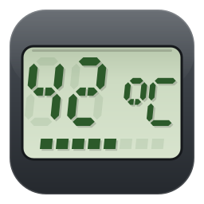

qsensors
qsensors is a lightweight Qt-based Linux hardware monitoring application using lm-sensors, inspired by the classic xsensors.
Try qsensors 0.80.10
The easiest way to try qsensors is the portable Linux AppImage build for x86_64 or arm64. No installation is required. The git repository also contains a Gentoo Ebuild and generic build instructions.
x86_64 runs on distributions with glibc 2.28 or newer, arm64 needs glibc 2.39. Both run natively on Wayland and on X11.
About qsensors
modern alternative to xsensors
- Monitoring
- CPU temperatures, motherboard sensors, fan speeds, voltages, currents and power.
- Units
- Temperature display in Celsius and Fahrenheit; small currents and power in mA and mW.
- Configuration
- Uses labels, names and values from lm-sensors, including
/etc/sensors3.confand/etc/sensors.d/. - Languages
- English, German, Spanish, French and Portuguese.
- License
- GPL-2.0-or-later